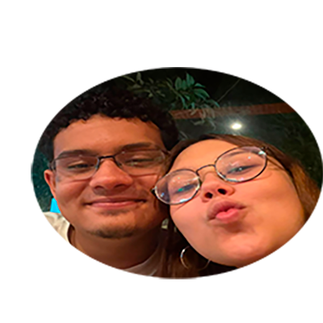

Esse site foi feito por mim, Daniel de Lima, no dia 27/05/2026 para Manuela da Silva Chaves
para testar seu amor por mim.
Esse site também servirá como certificado de masculinidade,
pois apenas homens de verdade consegue fazer sites.
Esse site testará seus conhecimentos por meio de caixas de texto, formulários, entre outros.
No final, quando responder tudo, você vai poder ver todas as suas respostas,
se acertou ou errou e sua nota final (de 0 à 10).
O fotmulário terá 5 perguntas variadas.